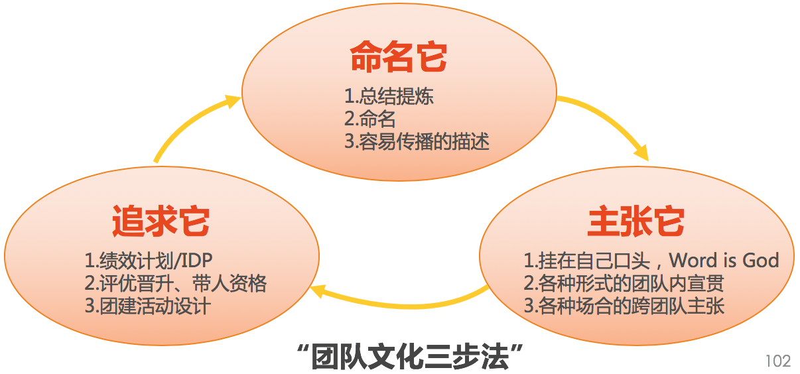

- 00 开篇词 你为什么需要学管理？.md.html
- 01 多年前的那些工程师都去哪了？.md.html
- 02 我要不要做管理呢？内心好纠结！.md.html
- 03 哪些人比较容易走上管理岗位？.md.html
- 04 我要不要转回去做技术呢？.md.html
- 05 作为技术管理者，我如何保持技术判断力？.md.html
- 06 我这样的风格能做管理吗？.md.html
- 07 我能做好管理吗，大家服我吗？.md.html
- 08 管理到底都做哪些事儿？.md.html
- 09 从工程师到管理者，角色都发生了哪些变化？.md.html
- 10 新经理常踩的坑儿有哪些？.md.html
- 11 我刚开始带团队，从哪里着手呢？.md.html
- 12 如何界定我团队是干什么的呢？.md.html
- 13 如何为团队设定合理的目标呢？.md.html
- 14 如何来规划团队的组织结构呢？.md.html
- 15 我都要申请哪些资源呢？.md.html
- 16 团队建设该从哪里入手？.md.html
- 17 如何提升员工的个人能力？.md.html
- 18 如何提升员工的工作意愿和积极性？.md.html
- 19 如何兼顾团队分工的稳定性和灵活性？.md.html
- 20 有什么方法可以有效提升团队凝聚力吗？.md.html
- 21 如何物色和培养核心人才？.md.html
- 22 如何建设团队文化，营造团队氛围？.md.html
- 23 如何和低绩效员工谈绩效？.md.html
- 24 如何让团建活动不再“收效甚微”？.md.html
- 25 多任务并行该如何应对？.md.html
- 26 如何确保项目的有效执行？.md.html
- 27 如何让流程机制得到有效的执行？.md.html
- 28 管理沟通那些事儿.md.html
- 29 沟通经常鸡同鸭讲，说不到一块怎么办？.md.html
- 30 如何掌控自己的情绪，以及如何管理情绪化的员工？.md.html
- 31 我各方面做得都很好，就是做不好向上沟通.md.html
- 32 横向沟通和非职权影响力.md.html
- 33 向下沟通的常见实例解析.md.html
- 34 管理沟通上有哪些常见的坑儿呢？.md.html
- 35 从空降谈管理方法论的积累.md.html
- 36 走出自己的管理之路.md.html
- 捐赠
22 如何建设团队文化，营造团队氛围？
提到文化，很多人都会“如堕五里雾中”，模模糊糊地知道，又看不真切。用钱钟书的话说就是：“你不问我文化是什么的时候，我还知道文化是什么；你问我什么是文化，我反而不知道文化是什么了”，很生动地描述出我们对于文化的感受，它似乎无处不在，却又很难一下子说清楚。
既然，文化定义起来都很难，那么为什么还要把团队文化作为“团建六要素”之一呢？接下来，我说说我的理由。
虽然，对于团队文化本身，没有唯一确定的定义。但是，每个团队，都有一些约定俗成的工作方式和是非判断。在这个团队中，即便没有人告诉你什么是对的、什么是错的，你大体上也清楚什么该做、什么不该做。它虽然不像规章制度那么带有明确而强制性的约束力，却也能引导和规范团队成员的言行举止，我们把这种潜移默化的行为准则和工作作风称为团队文化。
如果还是觉得的有点“虚”的话，你可以问自己一个问题：你希望用什么词汇来形容你团队的气质和调性呢？或者，你最愿意让什么样的员工留在你的团队里呢？这大抵就是你团队的文化。由于团队文化里往往蕴含着团队最推崇的价值观，所有也会把团队最核心的文化，称作团队的文化价值观。
我们可以通过一些名企的企业文化和价值观，来进一步地理解这个概念。
Google 有一条众所周知的价值观叫做“不作恶”；
百度早期的核心价值观是“简单可依赖”；
阿里的核心价值观是“客户第一”“平凡人做平凡事”等；
腾讯的核心价值观是“正直、进取、合作、创新”。
你也许会说，这是一些大公司的企业级的文化价值观啊，我带的这十几个人、几十个人的团队也需要有吗？
答案是，不但需要，而且很重要。不信你去看看那些有凝聚力、有战斗力的团队，他们都是有鲜明的气质和调性的，比如有的是“强执行”文化，有的是“靠谱”文化，有的是“极客”文化，还有的是“温暖”文化……不一而同。
那么，鲜明的团队文化及价值观，究竟能给一个团队带来什么呢？
第一，效率。这是由文化的秩序性带来的效果。由于文化里包含着约定俗成的工作标准和决策依据，并且团队成员都对此持有共识，因此不必事事请示上级和彼此确认。比如，一个“强执行”的研发团队，每个人都知道依计划行事并坚决兑现承诺的重要性；一个强调“安全”的数据团队，每个人都会考虑在工作推进过程中的安全措施。统一的行为准则和协作上的默契，带来了工作效率的大幅度提升。
第二，空间。这是由文化的导向性带来的效果。由于文化里约定了团队的价值导向，也就意味着，在符合价值导向的前提下，员工可以自主选择自己的工作手段，甚至是工作内容。这为很多有主动性的员工提供了自主发挥的空间。在“员工激励”一文中我们提到，自主性能够提升员工的投入度，激发员工的自驱力。所以，明确的文化也是激励手段。
第三，归属。这是由文化的筛选性带来的效果。由于团队文化里蕴含着价值观，所以团队文化有“筛选器”的作用。认同该文化的人会不断加入进来，而不认同该文化的人也会逐渐淡出，久而久之，团队里都是对该文化认同度很高的员工。价值认同是一种高层次认同，一旦认同，便具有很好的稳定性和黏性，这种认同为大家带来了深深的团队归属感，共事的员工也更有凝聚力。在盖洛普的“优势理论”中有关于“完美团队”的描述，即，“价值观相同、能力互补的团队”，可见价值观对于团队的重要意义。
第四，耐力。这是由文化的延续性带来的效果。文化对于一个组织，是相对稳定的元素，它能够在新、老员工间传承，并不会因为个别人员的变动而明显变化，除非是团队负责人有调整，才会给团队带来明显影响。2013～2014 年，百度有很多工作多年的老员工离职，这和当时公司从“简单可依赖”的文化，转而倡导“狼性文化”不无关系。从这里也可以看得出，一个企业或一个团队的文化，对于其稳定性、健壮性及耐力的重要作用。用通俗的话说就是，一个拥有鲜明而稳定的价值观的团队，更扛得住“折腾”。
既然团队文化能够带来这么多收益，那么要怎么打造自己团队的文化呢？
打造团队文化的步骤非常简单，大体分为三步，我给每一步起了一个好记的名字，分别叫“命名它”“主张它”和“追求它”。但是，每一步都有很多误区，我们接下来详细聊一聊。

第一步，“命名它”。其实就是提炼你团队的文化，用合适的词句把它表述出来。看上去非常简单的事情，却有着最为普遍的两大误区。
第一个误区是“拿来主义”。有些高管看到“别人家的文化”非常好，而且公司做得也很成功，于是就希望直接拿过来作为自己的文化来沿用。但他忽略了一个基本事实就是，一个团队的文化价值观，主要来源于团队负责人或核心管理者。你是什么样的作风和价值观，你团队就会是什么样的，也就是说，你的团队文化和你喜欢什么样的文化关系不大，而和你是什么样的人关系很大。比如：
面对问题，如果你总是抱怨，那么和团队强调积极文化是不会成功的；
面对合作，如果你总是对抗，那么和团队强调紧密协作是不会成功的；
面对工作，如果你总是被动等待，那么和团队强调积极主动是不会成功的；
面对下属，如果你总是漠不关心，那么和团队强调温暖有爱也是不会成功的。
所以，你想打造什么样的团队文化，核心是从你身上的优秀品质中提炼，从而把你优秀的特质放大到整个团队。若你身上没有的特质，那就不适合作为团队的文化价值观去培育。
第二个误区是“越简练越好”。于是很多公司提出的文化价值观就是几个词，比如前面我们提到腾讯的文化价值观是“正直、进取、合作、创新”，这在我眼里就是个反面教材，因为你记不住，就算是记住了，也很快会忘掉，因为很难感知，也太没区分度了。
所以，文化价值观的描述方式应该是越生动越好，而不是越简练越好，因为目的是为了让大家记住且传播。当然，如果能既生动又简练就更好了。这里我举几个好的案例，供你参考：
Google 的“不作恶”，非常简洁而生动；
百度的“简单可依赖”，也非常容易记忆和传播；
滴滴有个部门，他们的文化是“首问责任制”，就是“第一个被问到的人，就是推进该问题解决的责任人”，他们解释过一次我就记住了。
那么现在，避开上面我提到的两个误区，从你自己认同的价值观和优秀特质中去提炼出生动易传播的文化，你可以做到了吗？
第二步，“主张它”。就是要把你提炼出来的团队文化，宣贯给整个团队成员，甚至还包括上级和合作的兄弟团队。这是很简单的事情，是吗？在一次管理培训课上我特意做了一个统计，结果是，全班 30 多位管理者，大约只有 6 位管理者有明确的文化描述，但是却没有一位和自己的团队全员做过明确的主张。换句话说，这事主要是他自己清楚。而这种状态下，前面我们提到的团队文化的各种收益，他都拿不到。
当然，主张团队文化，也并不是要你做“祥林嫂”，见着谁就跟谁讲，而是要有意识地在一些公开或私下场合，去把你的团队文化告诉对方。比如，在开季度会的时候，可以和全员来宣贯，并作出详细解释；在你和团队成员 1 对 1 沟通的时候，也可以适时强调；在跨团队沟通中，也可以看情形主张。
总之，这里的关键在于，你是否有这个意识，以及是否愿意花这份心思。
第三步，“追求它”。这也是最重要的一步。有些员工并不买管理者的账，也不买团队文化的账，认为那就是管理者“洗脑”用的，喊喊口号，没什么实际意义。
一般出现这种情形的原因有两个：要么是文化提炼的时候，不是从管理者自身提炼的，管理者不能以身作则，做不到言行一致；要么是没有把团队文化和管理工作结合起来，在员工眼里就是“光说不练”，没法让他们感受到遵照这种文化的益处。
对于第一个原因，我们在前面“命名它”中已经探讨过。对于第二个原因，管理者更容易出现的是误区是“想当然”。我遇到过以下这样的情况：
“我们要打造团队文化，我申请了两天的徒步拉练，上级一直不批。”
“做一场拓展吧，去锻炼一下队伍，打造一下文化氛围。”
“创业团队嘛，去趟沙漠，来磨练一下大家的意志。”
以上这些说法，如果没有在活动中把团队文化要素设计进去，活动下来效果肯定不会好。因为对于每项活动，每个人的视角和态度都是不同的，不设计、不强调、不引导，文化的共识是很难被捕捉到的。
而且，更为重要的是，文化的践行，更多的体现在管理工作中，而不是活动中。比如：
你在和员工约定绩效方案的时候，有没有体现团队文化和价值的内容？
你在评优和表彰员工的时候，有没有明确体现团队文化价值观？
你在选拔新人导师的时候，有没有和团队文化挂钩？
你在项目成功发布的时候，有没有总结团队文化？
你在辅导和教导员工的时候，是否有提及团队文化？
……
正是这些日常的管理工作，蕴含着你的团队文化，它其实一直都在。团队文化的打造，并不是要无中生有，而是要把它提炼出来，发挥更大的引导、规范和传承的价值。
至此，关于如何建设自己团队的文化，你是否心里有数了呢？
© 2019 - 2023 Liangliang Lee. Powered by gin and hexo-theme-book.